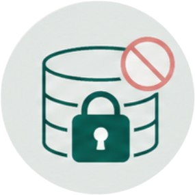

Prompt Guard는
AI 모델로 전달되는 사내 데이터를 분석해 민감정보를 탐지·마스킹·차단하고
필요한 정보만 안전하게 사용할 수 있도록 보호합니다.
OASecure는 사용자가 AI 서비스에 입력하는 문장, 문서, 이미지 속 내용을 먼저 확인합니다.
개인정보, 인증 정보, 내부 업무 데이터처럼 외부로 나가면 위험한 정보를 탐지해 안전하게 처리합니다.
AI 활용은 더 자유롭게, 민감정보 보호는 더 안전하게 만듭니다.
AI 입력창에서 전송 버튼을 누르는 순간 보안 검사를 실행합니다.
민감정보가 외부 AI 서버로 넘어가기 전, 마지막 지점에서 위험 입력을 확인합니다.
- 작성 중에는 사용자의 업무 흐름을 방해하지 않습니다.
- 전송 직전에만 검사를 수행해 불필요한 개입을 줄입니다.
- 위험 입력은 경고, 마스킹, 차단으로 보호합니다.
PromptGuard는 별도의 무거운 보안 프로그램 없이 브라우저 확장앱 방식으로 동작합니다.
직원은 기존에 사용하던 AI 도구를 그대로 사용하면서 보안 기능을 적용할 수 있습니다.
- 복잡한 설치 절차 없이 가볍게 시작할 수 있습니다.
- ChatGPT, Claude, Gemini 등 웹 기반 AI 도구에 적용할 수 있습니다.
- 오픈소스 구조를 기반으로 조직 상황에 맞게 확장할 수 있습니다.
단순한 숫자나 키워드만 확인하는 것이 아니라, 한국어 업무 문장 안에서 민감정보가 어떤 의미로 사용되는지 함께 분석합니다.
- 주민등록번호, 전화번호, 이메일 등 한국형 개인정보를 탐지합니다.
- 계약금, 위약금, 손해배상 등 계약 관련 문맥을 확인합니다.
- 가격 전략, 경쟁사 대응처럼 내부 전략에 가까운 표현도 검사합니다.

PromptGuard는 사용자가 입력한 민감정보 원문을 그대로 저장하지 않고, 위험 유형과 조치 결과 중심의 메타데이터만 기록합니다.
- 민감정보 원문 노출을 최소화해 사용자 프라이버시를 보호합니다.
- 보안팀은 원문 없이도 위험 현황과 조치 결과를 확인할 수 있습니다.
- 직원 신뢰와 조직의 보안 통제를 함께 확보할 수 있습니다.